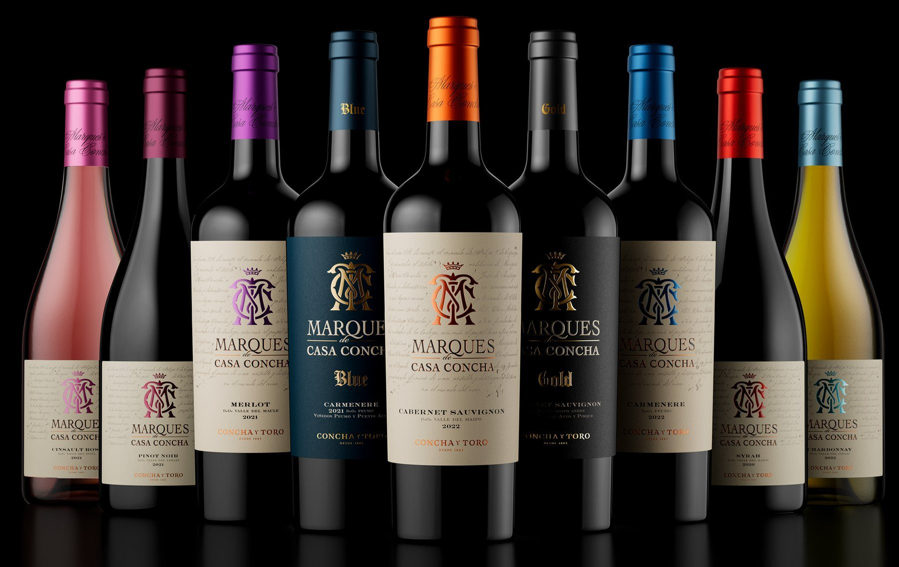
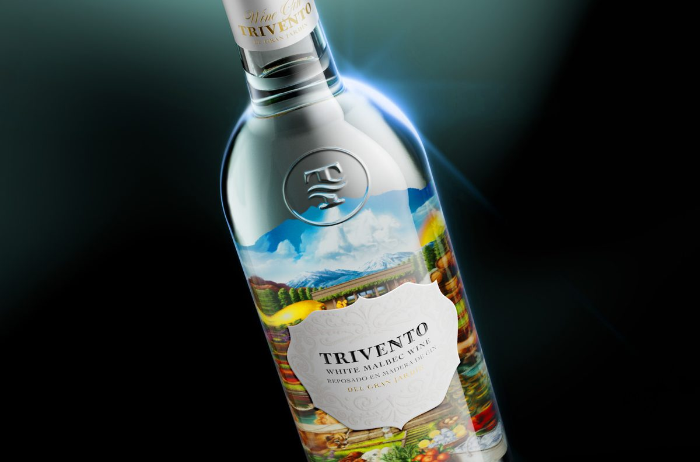
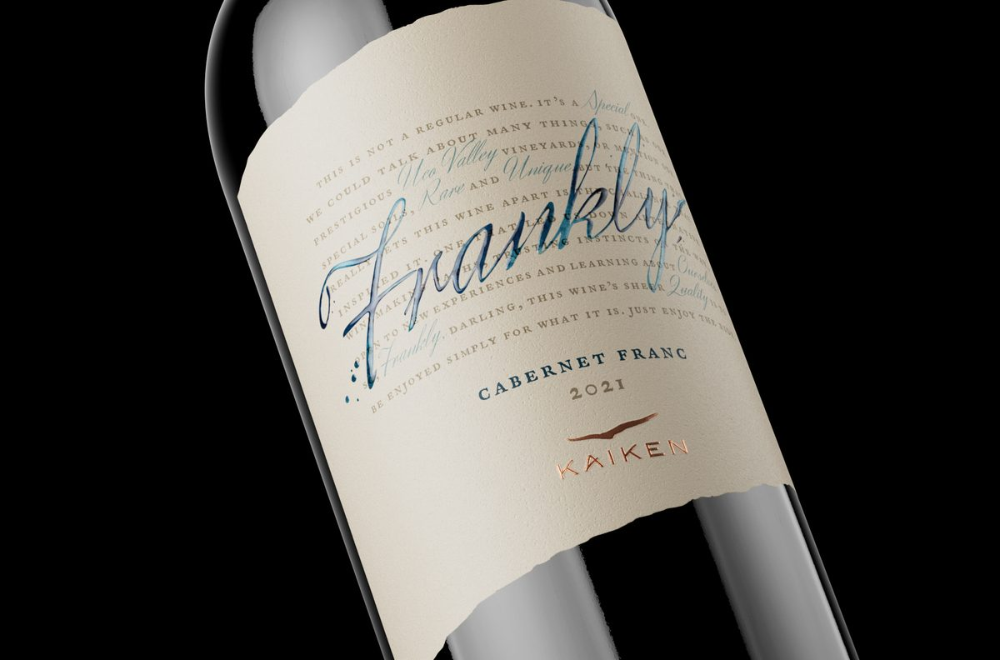
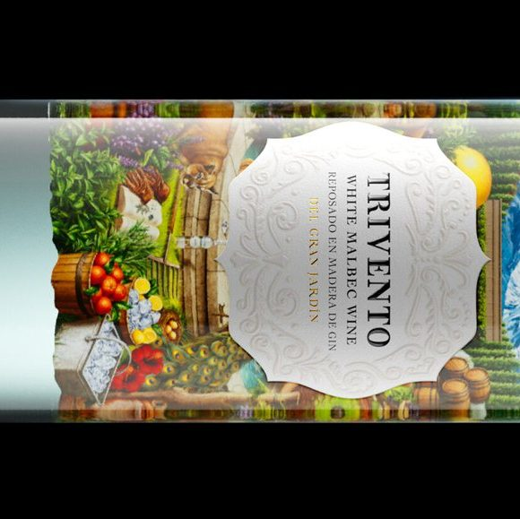

A packaging studio for spirits, wine and beer. Since 2015.
Jacomy & Mayne
Most bottles get walked past. Yours should get picked up.
Worked with Concha y Toro, Trivento and Kaiken.
What does your bottle say before anyone tastes it?Who the f*** is Jacomy & Mayne?
Who is Jacomy & Mayne?
Roy and Andy, from a Mendoza studio. Friends first, designers second. 20 projects in our portfolio. No two look alike.
From the founders
“Every brand has its own story, its own feeling, its own energy, and our job is to bring that to life in a way that’s impossible to ignore.”
A great liquid deserves a bottle people pick up. You already have something good in the glass. On the shelf, nobody can tell yet.
Every time they walk past, you lose the moment that matters: someone stopping, picking up the bottle and asking what’s inside.
One studio from the first spark of an idea to the final design, and we're in it with you.
-
01
Story & strategy
Who you are and what you're called.
-
02
Label & packaging
What people see before anyone tastes it.
-
03
Structure
The glass, the closure, the shape.
-
04
To the shelf
Everything that travels with the bottle.
What we can help with
- Brand strategy Where the brand stands and who it’s for.
- Naming A name for the brand, the line or the bottle.
- Brand story What’s behind the liquid, put into words.
- Branding The look that ties every bottle together.
- Label design Front and back, with your story up front.
- Packaging The whole pack, not just the label.
- Bottle shape A bottle shape designed for your brand.
- Closures The cap, cork or stopper, designed to match.
- Structural design How the pack is built, folds and holds.
- 3D See the bottle before it exists.
- Boxes & shippers The box it’s given in and the one it travels in.
- Merch & stationery Everything around the bottle that carries the brand.
Worked with
Selected work
Nothing here looks like the bottle next to it.

Marques de Casa Concha
Concha y ToroChileWine Complete rebranding. 11 varietals. Younger, without losing its elegance and heritage.
Trivento Wine Gin
TriventoArgentinaGin The elegance of wine, reinvented as a gin.
Frankly by Kaiken
KaikenArgentinaWine Frankly, we'll let you discover it yourself.Behind the bottles
-
Censurado Sparkling Wine
A sparkling wine named Censurado.
On the label, a collage: a brave, censored figure, a snake wrapped around her, and flowers that give her hope.
Sparkling wine Argentina
-
Anansi Rum
Anansi is the spider of West African and Caribbean folklore, a trickster said to own every story in the world.
The rum carries his spirit: defiance and freedom.
Rum Guyana
-

Trivento Wine Gin
A wine house, a new spirit: a gin inspired by the wild charm of Trivento’s Garden.
Gin Trivento, Argentina
Questions
What to know before we start.
-
Jacomy & Mayne is Roy and Andy’s studio, founded in 2015.
Roy and Andy. “From the first spark of an idea to the final design, we’re in it with you.”
-
Spirits, wine and beer are what we do. Our portfolio includes rum, gin, whisky, wine and sparkling wine.
-
That was the brief for Marques de Casa Concha: feel younger without losing the elegance and heritage that defined it. We simplified the look and gave more room to its history.
-
Yes. You don’t need to know what you want yet.
-
Yes. Bottle shape, closures, structural design and 3D are part of what we do, along with secondary boxes and shippers.
-
It depends on the project.
-
It depends on the scope. Tell us where you’re starting from and we’ll reply by email. Sending the form costs nothing and doesn’t commit you to anything.
-
We’ll reply by email.
Roy or Andy reads it and replies by email.
Not sure we’re a fit?
Start a projectWe’re not for everyone. Neither is your brand.
We take on a limited number of projects each year.
Got it, . We'll reply by email.
Got it, . Roy or Andy will read it and reply by email.